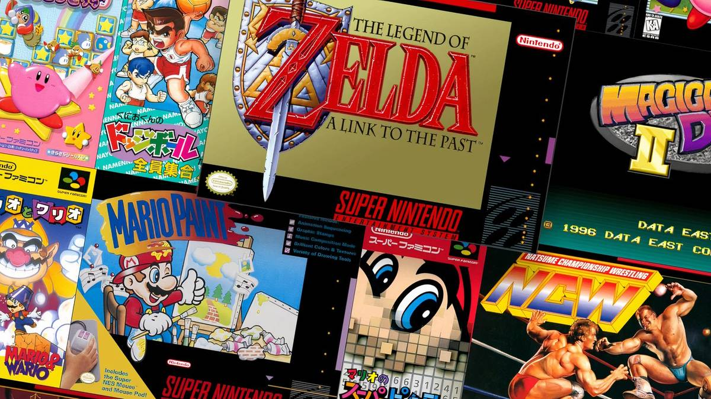

Gaming · 26 Oct 2026
The 10 Best SNES Games to Play on Nintendo Switch Online

From Super Mario World to The Legend of Zelda: A Link to the Past, these are the best games on the Super Nintendo collection on Nintendo Classics.
Multiple independent publishers are reporting on the same development: The 10 Best SNES Games to Play on Nintendo Switch Online.
The available reports place the development in the Gaming category. The accounts were compared for agreement on the central event rather than simply shared names or broad topics.
One of the available reports describes the development this way: From Super Mario World to The Legend of Zelda: A Link to the Past, these are the best games on the Super Nintendo collection on Nintendo Classics.
Readers should consult the linked source reports for additional context, updates and details that may change as the story develops.
Sources
This article was produced by the C. O. Eric AI Newsroom from the cited sources. It is published only after automated evidence and safety checks.